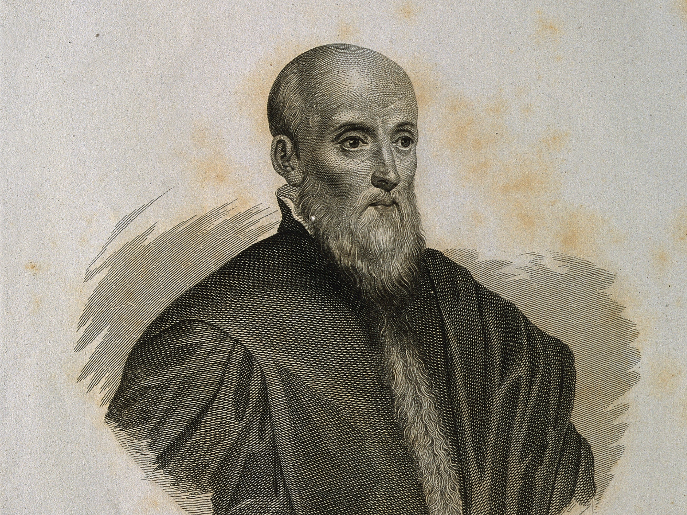

As an aristocrat, Luigi Cornaro didn't hold back on wine or food, he ate and drank heavily until middle age. One doctor's visit put him on a path to obtaining longevity in a period known for short life spans and backbreaking labour.
By his 30s-40s, doctors had diagnosed him with issues such as stomach disorders and gout, telling him simply that if he didn't change his lifestyle then he wouldn't live much longer.
After hearing this news, the rest of his life was devoted to taking this advice to its logical extreme; he stripped his diet down to the bare minimum in what he called 'la vita sobria' - the temperate life.
His diet consisted of 12 ounces of solid food and 14 ounces of wine per day, nothing more. His principle was to eat only as much as the body needs, primarily eating foods such as bread, egg yolk and broth. And the result was that he reported feeling healthier and more alive in his 60s and 70s than at any point in his youth.
Cornaro published books at different ages throughout his 80s and 90s, always reinforcing his core point; eating in moderation is the sole factor of longevity and that excess shortens lifespan. Cornaro wrote about playing with his grandchildren and enjoying music, describing old age as anything but decline.
In 1566, Cornaro died at the age of 98 (although some historians push his age closer to his early to mid 80s which was still very impressive for the time) and his writings were translated into many languages with many editions in the coming centuries, even being a favourite with Benjamin Franklin.
Well, we've spent the last 90 years studying it and it's more nuanced than a straight answer. In the 1930s, caloric restriction research took place on rats and other species and confirmed that lifespans were increased. Later on through Rhesus monkey studies, primates were found to have health improvements such as decreases in cancer and diabetes risk but less of a dramatic lifespan improvement.
As for humans, well the nature of studying humans to the same level especially across a large amount of time, is difficult. A trial in the 2010s found that when non-obese adults were put on a 25% caloric restriction for 2 years, there were found to be improvements in insulin sensitivity, reduced inflammation and markers of slowed biological aging to some extent.
Will reducing caloric intake for decades make you live till 100+ guaranteed? No. But for improving health span, reducing disease risk and potentially adding years indirectly? Yes, it's very likely.
Cornaro's claims were very impressive for the time, where little science or nutritional information existed. However, it's important to take into account that Cornaro was a wealthy man, not a peasant who had to do hours of hard labour. Even so, from 500 years ago, his claims are still heard and studied to this very day.